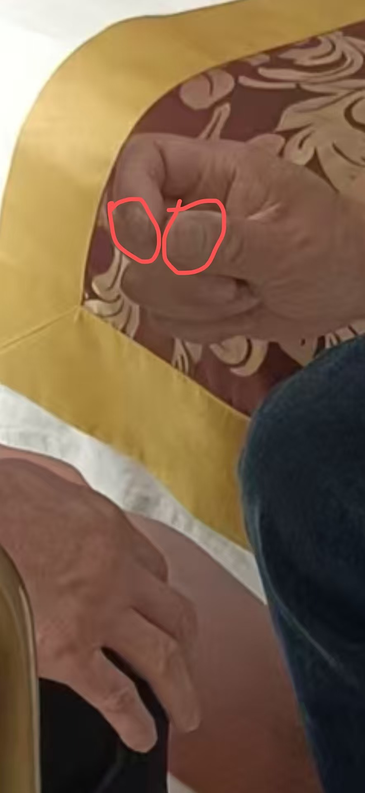
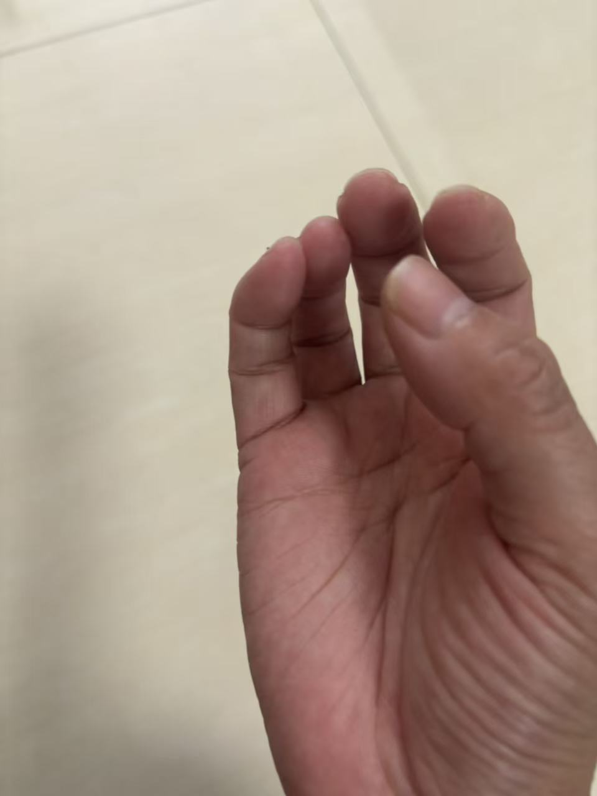
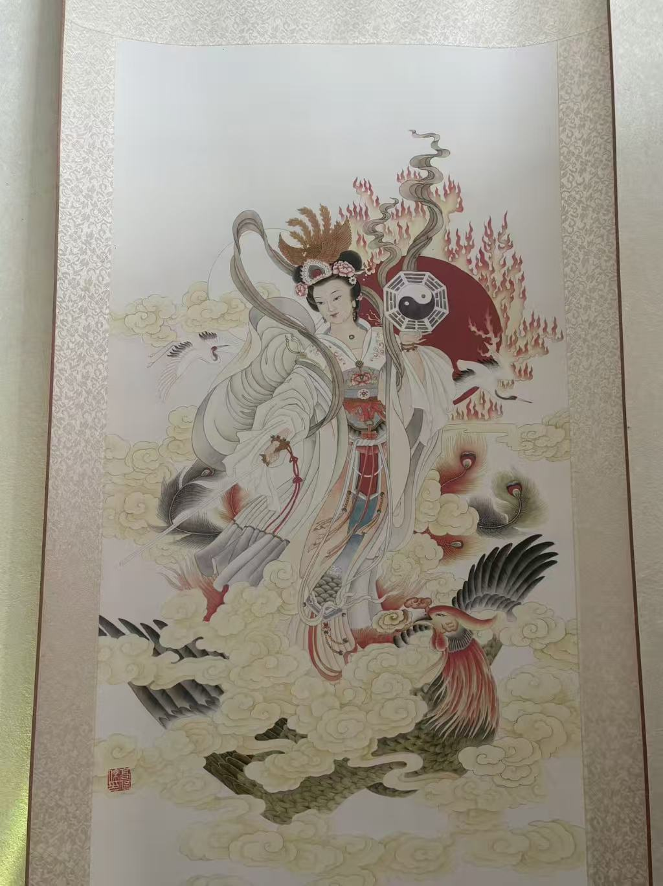

20260524意针
大部分学生已经离开
继续学习虚空针针灸
@紫鸢真人 意针，
基础功能谁学谁会
有绿色金色光
所以说，在我这里，每个孩子都是神童
意针要对穴位吗
绝对没有淘汰制一说
[强][强][强]
意针不需要认识穴位
而是阿是穴
就是哪里痛针哪里，哪里不舒服针哪里
阿是穴就是疼痛点，不是单一穴位
@谢芳玲 眼功太厉害了[强][强][强]
这学生第一天学就开悟了
口若悬河
讲修炼方法
以前没接触过
太厉害了👍👍👍
所以说，这些学生都是高维来的
他们都互相看到了对方的原神
施针的这个，修出的就是绿光
金针是我送给他的
所以看到的是绿光带金

有图像
食指有一个在练太极
修的果位层次不一样，颜色也不一样
广州二师兄是天蓝色
拇指有个头像
我是紫色
嗯嗯

看的见针吗
